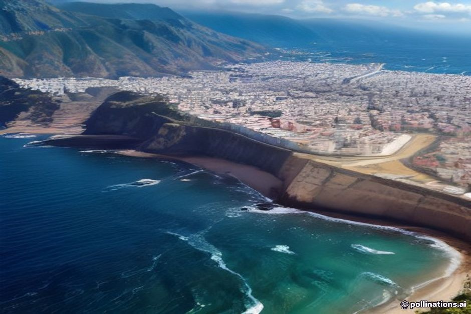

Chi cerca "Madeira agosto" di solito vuole sapere tre cose: quanto fa caldo, se il mare si può davvero fare e se c'è troppa gente. Le risposte brevi: caldo ma mai afoso, mare piacevole e calmo, e sì, agosto è il mese più affollato. Qui sotto trovate le temperature a Madeira mese per mese e, se avete date flessibili, quando conviene andare. Sapere che esistono anche giugno e settembre può cambiarvi il viaggio.
Madeira in estate: temperature mese per mese
Per chi viene dall'Italia, il primo dubbio è il caldo. A Madeira non sono le temperature della pianura padana o del Sud a luglio. Le massime a Funchal stanno intorno ai 24°C a giugno, a circa 26°C a luglio e vicino ai 27°C ad agosto. Di notte raramente si scende sotto i 18 o 19°C.
L'isola sta in mezzo all'Atlantico, non sulla terraferma iberica. Per questo evita le ondate di calore che colpiscono Lisbona, Siviglia o l'Algarve a luglio e ad agosto. Gli abitanti dicono che il soprannome di "isola dell'eterna primavera" vale anche nel mese più caldo: 27°C con la brezza del mare si sentono molto diversi dagli stessi 27°C nell'entroterra.
In pratica: pantaloncini, sandali e costume bastano quasi ogni giorno. Il vero nemico è il sole, non l'afa.

Il mare a Madeira ad agosto: si può fare il bagno?
Sì, ma senza aspettarsi l'acqua del Mediterraneo. L'Atlantico intorno all'isola si scalda lentamente: circa 21°C a giugno, 22-23°C a luglio e 23-24°C ad agosto. Il picco dell'anno arriva a settembre, intorno ai 24°C, perché l'oceano continua ad accumulare calore anche quando l'aria ha già iniziato a raffreddarsi.
Quello che conta di più, però, non è l'ultimo grado di temperatura. In estate il mare è il più calmo dell'anno. Per questo le soste per il bagno sono più affidabili e l'acqua è più limpida per lo snorkeling tra giugno e agosto.
Un consiglio onesto: Madeira non è un'isola di spiagge lunghe e sabbiose. Il bagno più bello si fa spesso dalla barca, in calette raggiungibili solo dal mare. È il motivo per cui molti scelgono una gita in barca con sosta per il bagno e non una giornata in spiaggia.
Piove a Madeira in estate?
Quasi mai. Giugno, luglio e agosto sono i mesi più asciutti dell'anno sulla costa sud, e a Funchal capitano lunghi periodi senza una goccia misurabile. La costa nord (Santana, São Vicente, Porto Moniz) ha più nuvole, a causa del noto microclima diviso dell'isola, ma anche lì l'estate è la finestra più asciutta e stabile.
È l'unica stagione in cui guardare le previsioni serve più a capire quanto sarà forte il sole che a temere una giornata rovinata. Un dettaglio utile: una mattina velata a Funchal può trasformarsi nel pomeriggio più limpido del viaggio, quindi controllate il meteo uno o due giorni prima e non fidatevi di una media stagionale.
Giugno, luglio o agosto: quando andare a Madeira
Se la domanda è "Madeira quando andare", la risposta dipende da cosa conta di più per voi.
- Giugno: aria più fresca (24°C), mare ancora sui 21°C. Meno gente e prezzi di norma più bassi. Se siete freddolosi in acqua, è il mese più "fresco" dell'estate.
- Luglio: equilibrio buono, 26°C e mare tra 22 e 23°C. L'isola è già piena di vita, ma non ai livelli di agosto.
- Agosto: massimo caldo (circa 27°C) e mare tra 23 e 24°C. È anche il periodo con più visitatori: le vacanze scolastiche europee coincidono con la festa dell'Assunzione del 15 agosto, il nostro Ferragosto, e con i preparativi del Madeira Wine Festival.
- Settembre: mare al suo massimo annuale (circa 24°C) e più disponibilità. Per molti è il mese migliore.
In sintesi: per il caldo garantito, il mare calmo e le giornate lunghe, l'estate è difficile da battere. Ma è anche la stagione più affollata e cara. Voli, hotel e gite in barca si esauriscono con settimane di anticipo, soprattutto nelle sere di luglio e agosto. Se folla e prezzo contano più di un grado di mare, la tarda primavera o settembre offrono un calore quasi identico con molta più disponibilità.
Se invece viaggiate per forza ad agosto, la regola è semplice: prenotate barca e tavolo al ristorante prima di atterrare, non dopo.
Cosa c'è da vedere e da festeggiare in estate
L'estate è la stagione delle feste. Giugno si apre con il Festival do Atlântico, quattro sabati sera di fuochi d'artificio con musica sopra la baia di Funchal, e finisce con i falò sulle spiagge di ciottoli per São João, la notte del 23 giugno. A luglio c'è musica all'aperto al Parque de Santa Catarina e piccoli eventi tipicamente madeirensi, come la festa delle patelle a Paul do Mar.
Ad agosto il 15 riempie ogni parrocchia di processioni e fuochi d'artificio. Verso l'ultima settimana del mese, a Câmara de Lobos, è già in corso il Madeira Wine Festival, legato alla vendemmia. Non serve pianificare niente per goderseli: sono un extra in un viaggio già costruito attorno al mare e alle montagne.

Cosa mettere in valigia
La protezione solare viene prima di tutto. Portate una crema solare rispettosa della barriera marina, un cappello e un capo leggero a maniche lunghe per la barca. Il sole atlantico è più forte di quanto sembri, perché la brezza nasconde il caldo.
Poi costume e scarpe da acqua per le calette di roccia vulcanica. E uno strato più caldo per la sera: Funchal si rinfresca sensibilmente dopo il tramonto, e in montagna, sul Pico do Arieiro e sul Pico Ruivo, può fare davvero freddo anche ad agosto. Per le levadas bastano scarpe da ginnastica comode: restano percorribili per tutta la stagione.
Madeira ad agosto in barca: cosa sapere prima di prenotare
Ad agosto le uscite in barca sono tra le prime cose a riempirsi. Se volete fare una gita in barca a Madeira in alta stagione, prenotate presto. Con Chifbay la barca è solo vostra, fino a 5 persone, con due skipper abilitati di Madeira. Si parte dalla Marina do Funchal, pontile C, e il prezzo è per tutta la barca, mai a persona.
- Uscita di giorno (partenza alle 10:00 o alle 14:00): 2 h 30 fino a Ribeira Brava per 500 EUR, oppure 3 h fino a Ponta do Sol per 600 EUR. Si passa da Câmara de Lobos e Cabo Girão, con bagno e paddle board a Fajã dos Padres. Tutti i dettagli.
- Tramonto (partenza 1 h 15 prima del tramonto, tutto l'anno): 2 h fino a Cabo Girão per 400 EUR, oppure 2 h 30 fino a Ribeira Brava per 500 EUR. Senza sosta per il bagno. Scopri l'uscita al tramonto.
Su ogni uscita sono inclusi cibo e bevande a bordo, un video a 360° con Insta360, riprese con drone (se il meteo lo permette) e foto scattate con una vera macchina fotografica. La cancellazione è gratuita fino a 24 ore prima della partenza. Delfini, balene, luce dorata e bel tempo non si promettono: quando arrivano sono un regalo. Per orari e logistica trovate tutto nella pagina informazioni pratiche.
L'estate non rende Madeira migliore. Rende solo l'acqua impossibile da rifiutare.
In breve
Madeira in estate è calda ma gestibile, asciutta e con il mare più calmo dell'anno. Agosto è il mese più caldo e il più pieno. Se potete scegliere, giugno e settembre danno quasi lo stesso piacere con meno folla. Se andate ad agosto, anticipate le prenotazioni e portate la crema solare.
Per idee su come passare il tempo in acqua, date un'occhiata alle nostre esperienze o al diario, oppure scriveteci per scegliere la data.